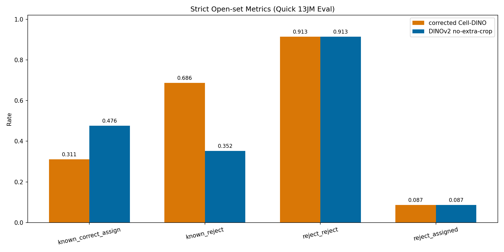
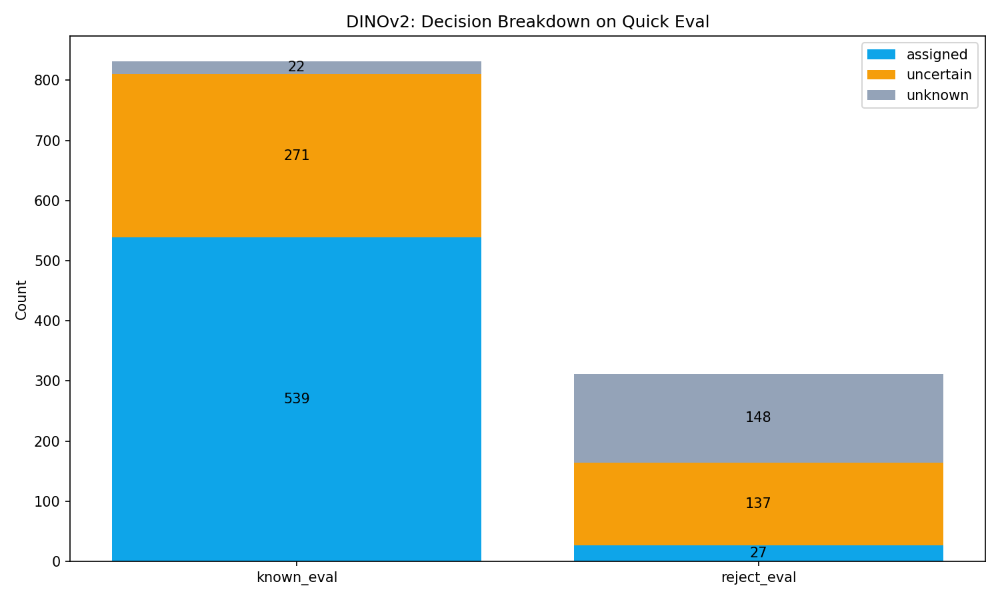
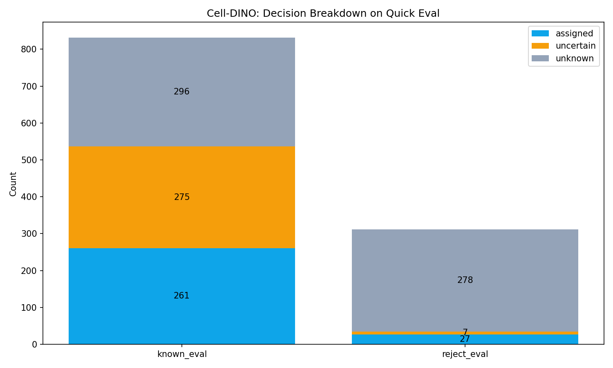
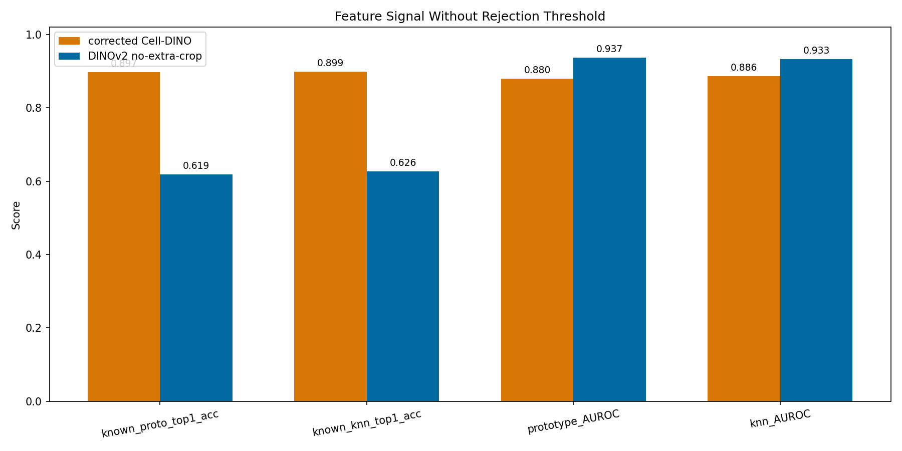
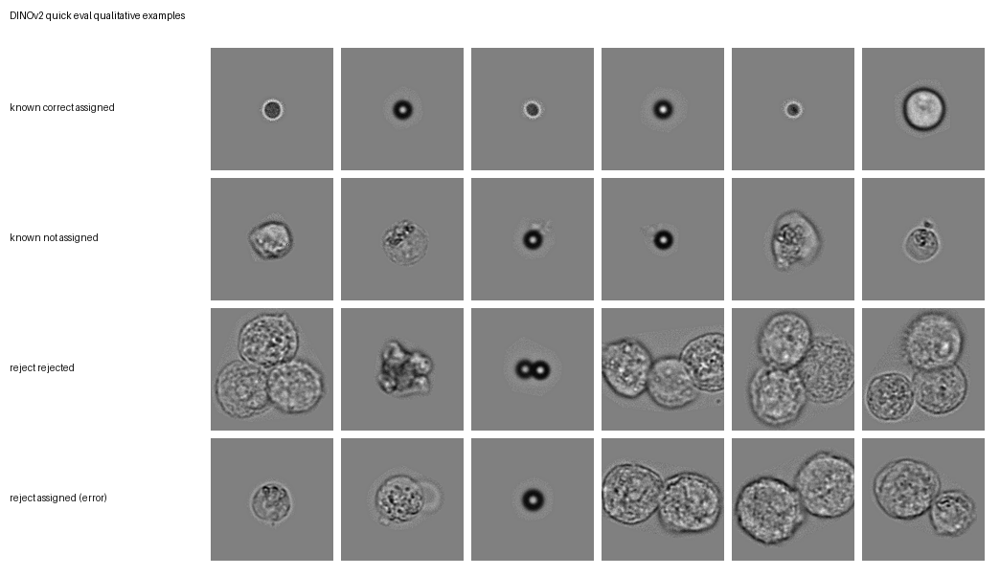
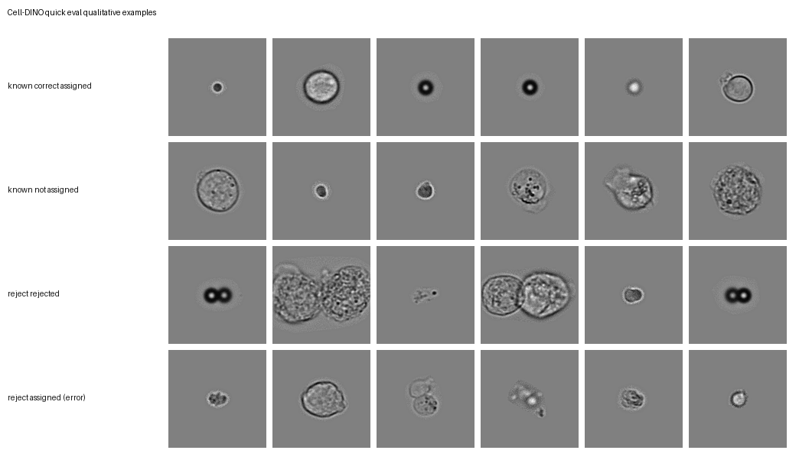

主题：两种特征提取方案对比（Cell-DINO vs DINOv2），用于 few-shot + open-set 的“分配/拒绝”任务。
数据时间 2026-04-22 状态 completed 用途 快速趋势判断（不是最终论文结论）
一句话结论：在这次 quick eval 的“能分就分、该拒就拒”口径下，DINOv2 更适合作为后续 few-shot/open-set 的默认特征底座；Cell-DINO 在“已知类内细分”很强，但在这套判定规则下更容易把已知类错拒掉。
不是在比“谁的 accuracy 更高”，而是在比：在开放集 few-shot 场景下，谁更像一个“可用的分配器/拒识器”。
我们最关心两件事：
结论先说在前面：不是全量逐张标注；这是一套人工筛选出来的评估集，用于快速判断趋势。
/home/wangqianqian/project/FS/data/13JM+CAOV3+MNT1/我们只换“特征提取 backbone”，下游决策脚本与评估集保持一致，尽量做到公平对比。
下面的数字都来自 assets/computed_metrics.json，对应同一批评估图片（known_eval=832, reject_eval=312）。
| 指标（口径） | DINOv2 | Cell-DINO | 读法 |
|---|---|---|---|
| known_correct_assign_rate | 0.476 | 0.311 | 已知类里“分配且分对”的比例（越高越好） |
| known_reject_rate | 0.352 | 0.686 | 已知类里“被拒/不分配”的比例（越低越好） |
| reject_reject_rate | 0.913 | 0.913 | 拒绝集里“成功拒绝”的比例（越高越好） |
| reject_assigned_rate | 0.087 | 0.087 | 拒绝集里“被错分到已知类”的比例（越低越好） |
解读：DINOv2 的优势主要来自两点：更多 known 能被正确分配，以及显著减少 known 被错拒。在 reject 的“能否拒绝”上两者持平。

建议看法：先看 known_correct_assign / known_reject 两根柱（业务更敏感）；reject 两根柱本轮差不多。
这两张图展示各自对 known_eval 与 reject_eval 的 assigned / uncertain / unknown 数量分布。

known_eval：assigned 539 / uncertain 271 / unknown 22。

known_eval：assigned 261 / uncertain 275 / unknown 296（明显更保守）。
这页帮助解释一个常见困惑：为什么 Cell-DINO 的类内识别指标更高，但最终 open-set 决策反而更差。

读法：
换句话说：Cell-DINO 更像“强分类器”，但在这套 open-set 阈值/拒识规则里更容易把已知类推到拒绝侧；DINOv2 更像“更稳的分离器”。
两张图的四行定义一致：已知类分对 / 已知类没分配 / reject 被拒绝 / reject 被误分配。


./assets/computed_metrics.json./assets/fig1~fig6_*.png